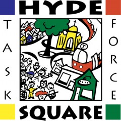

Hyde Square Task Force, Inc.

Website:
http://www.hydesquare.org/ Location:
Jamaica Plain, MA
Our mission is to develop the skills of youth and their families so that they are empowered to enhance their own lives and build a strong and vibrant urban community. All of our programs are developed by residents in response to community needs. Since its founding, the Hyde Square Task Force has developed on-going programs for youth and families that not only help them advance at school and in careers, but also help create positive relations and opportunities to take pride and action in our community.
Hyde Square Task Force youth are leaders within the organization and beyond, helping to diminish negative stereotypes of urban youth with their positive energy and dedication to improving their community. In each of our high-intensity youth teams, participants ages 14-21 receive specialized training and participate in 6-15 hours of community-building and youth development activities each week. Youth develop leadership skills through our core curriculum, while acting as instructors and role models for younger children in our elementary and middle school programs
Supported Projects
Technology Capacity Coordinator
Wes Kaplan
8/2007 — 8/2008
hrough our after school programs and community organizing initiatives, we strive to develop the skills of youth and adult residents so that they are empowered to enhance their own lives and build a stronger urban community. We serve over 500 youth and their families annually directly through our programs, which include:
•School-based after-school and summer programs for area elementary and middle school students
•A Paths to Career and College Program for over 125 middle and high school students that includes one-to-one mentoring, tutoring, career and college planning, and SAT Prep.
•Youth leadership and youth organizing programs for teens
•Youth workforce development programs
•A Parent Engagement Initiative for Boston Public School parents
•A Latin and Hip-Hop Dance program and a variety of recreation programs
•Cultural and Arts programs for youth and parents
The CTC VISTA Project will support the inclusion / expansion of technology as a component of all of our youth and community development programs. Computer / Internet literacy and proficiency in other technology applications are now part of the “basic literacy” expected of all high school graduates, in order to succeed higher education and professionally. Computers and the Internet have also become indispensable tools for a range of music and artistic pursuits. Technology applications such as digital video and photography and web page development are also useful learning and communications tools across a variety of disciplines, including arts, literacy and community development. “Activating” technology in our youth and community development programs will provide an essential tool as our youth develop their voice and vision for personal success, civic participation, and community building.
Wes assisted in the set up of the new HSTF Music Clubhouse, including providing training to youth who will eventually be in charge of a youth-run music studio. He worked with youth to set up for the Clubhouse’s first Open House which was held in early April. He is also supporting the Youth Literacy Tutors program in creating fliers for a community event that the youth will be hosting in May. Wes also attended the NTEN conference in March.
Wes finished working with youth to create new website for HSTF Music Clubhhouse and continues supporting youth in utilizing technology in the music program particularly to create original compositions and arrangements.
Because Wes’ direct supervisor is not involved in technology implementation on a day-to-day basis, it often means that Wes has to “fend for himself” in working with program staff. To help alleviate this issue, Wes and his supervisor are now meeting on a more frequent schedule and his supervisor will take a more active role in troubleshooting any communication gaps between Wes and program staff.
Related Content
None created yet!